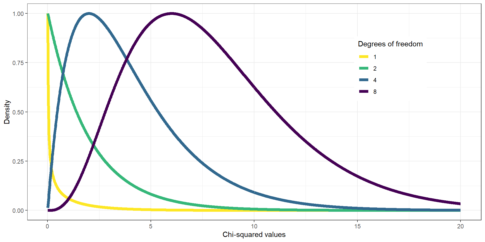
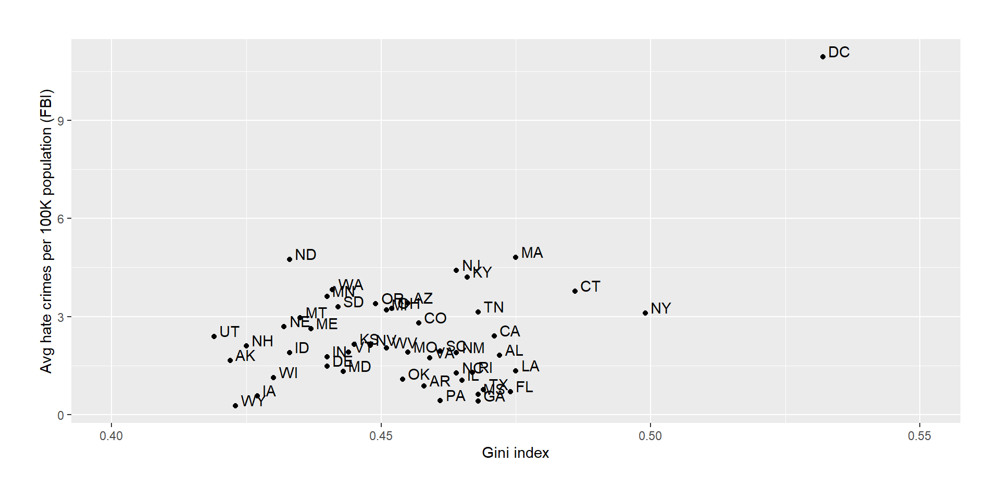
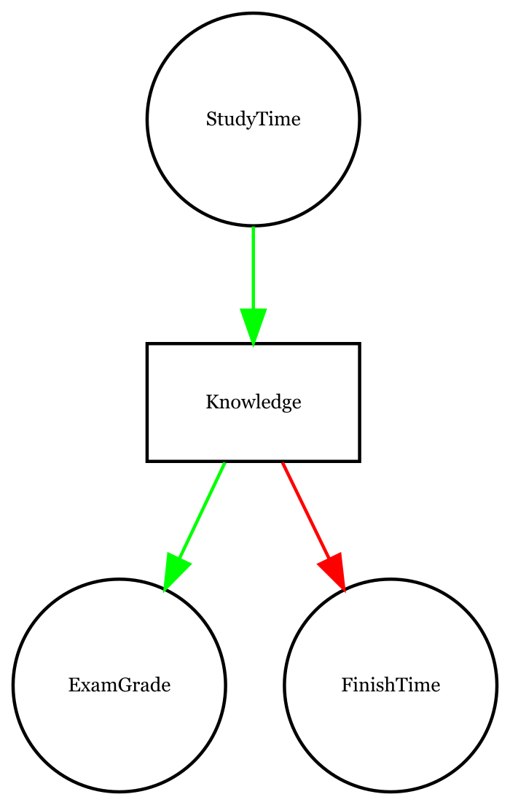
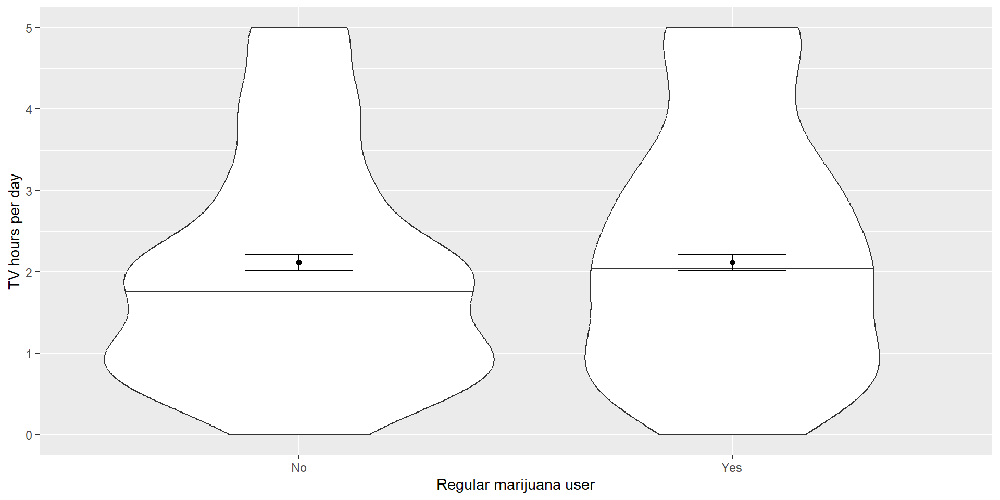

Julius-Maximilians-University Würzburg
Course: “Biostatistics”
Translational Neuroscience
We will first focus on modeling categorical relationships (of variables that are qualitative!).
These data are usually expressed in terms of counts.
Example: Candy colors
Bag of candy: 30 chocolates, 33 licorices, and 37 gumballs.
Is the distribution fair (i.e., 1/3rd of the bag = each candy) and the fact that there are only 30 chocolates a random accident?
What is the likelihood that the count would come out this way (or even more extreme) if the true probability of each candy type is the same?
The Chi² test checks whether observed counts differ from expected values (\(H_0\)).
\[ \chi^2 = \sum_i\frac{(observed_i - expected_i)^2}{expected_i} \]
The null hypothesis in our example is that the proportion of each type of candy is equal (1/3 or ~33.33).
If we plug in our values from above, we would calculate \(\chi^2\) like this:
\[ \chi^2 = \frac{(30 - 33.33)^2}{33.33} + \frac{(33 - 33.33)^2}{33.33} + \frac{(37 - 33.33)^2}{33.33} = 0.74 \]
On its own, the \(\chi^2\) statistic is not interpretable - it depends on its distribution.
The shape of the chi-squared distribution depends on the degrees of freedom (much like the t distribution), which is the number of category levels \(k-1\).
For the candy example, we use a chi-squared distribution with DFs = 2 (3 candy categories minus one). If we’d look at the distribution and found \(\chi^2 = .74\) on the x-axis, we would see that it does not fall far into the tail of the distribution but is rather in the middle. If we calculate the p-value, we’d get \(P(\chi^2 > .74) = 0.691\).
It is thus not particularly surprising to find this distribution of candies and we would not reject \(H_0\) (equal proportions).
The \(\chi^2\) test is also used to test whether two categorical variables are related to each other.
Example: Are Black drivers more likely to be pulled over by police than white drivers?
We have two variables: Skin color (black vs white) and being pulled over (true vs. false). We can represent the data in a contingency table (remember: the count() function was helpful to do this in R):
| searched | Black | White | Black (relative) | White (relative) |
|---|---|---|---|---|
| FALSE | 36244 | 239241 | 0.1295298 | 0.8550062 |
| TRUE | 1219 | 3108 | 0.0043565 | 0.0111075 |
If there is no relationship between skin color and being searched, the frequencies of searches would be proportional to the frequencies of skin color. This would be our expected values. We can determine them using probabilities:
| Black | White | ||
|---|---|---|---|
| Not searched | \(P(\neg S)*P(B)\) | \(P(\neg S)*P(W)\) | \(P(\neg S)\) |
| Searched | \(P(S)*P(B)\) | \(P(S)*P(W)\) | \(P(S)\) |
| \(P(B)\) | \(P(W)\) | \(100\%\) |
Remember: You can only multiply two probabilities to get their conjoint probability if they are independent. Here, we assume independence to calculate expected values and then check how much our observed values deviate from independence.
If we compute the standardized squared difference between observed and expected values, we can sum them up to get \(\chi^2 = 828.3\)
| searched | driver_race | n | expected | stdSqDiff |
|---|---|---|---|---|
| FALSE | Black | 36244 | 36883.67 | 11.09 |
| TRUE | Black | 1219 | 579.33 | 706.31 |
| FALSE | White | 239241 | 238601.33 | 1.71 |
| TRUE | White | 3108 | 3747.67 | 109.18 |
We can then compute the p-value using a chi-squared distribution with \(DF = (levels_{var1} - 1) * (levels_{var2} - 1) = (2-1) * (2-1) = 1\)
We can also calculate a \(\chi^2\) test easily in R:
Pearson's Chi-squared test
data: summaryDf2wayTable
X-squared = 828.3, df = 1, p-value < 2.2e-16The results indicate that the data are highly unlikely if there was no true relationship between skin color and police searches! We would thus reject \(H_0\).
Question: What is the direction of the observed relationship?
If we want to know not only whether but also how the data differ from what we would expect under \(H_0\), we can examine the residuals of the model.
The residuals tell us for each cell how much the observed data deviates from the expected data.
To make the residuals better comparable, we will look at the standardized residuals:
\[ \text{standardized residual}_{ij} = \frac{observed_{ij} - expected_{ij}}{\sqrt{expected_{ij}}} \]
where \(i\) and \(j\) are the rows and columns respectively.
Negative residuals indicate an observed value smaller than expected.
| searched | driver_race | Standardized residuals |
|---|---|---|
| FALSE | Black | -3.330746 |
| TRUE | Black | 26.576456 |
| FALSE | White | 1.309550 |
| TRUE | White | -10.449072 |
Alternatively, we can represent the relative likelihood of different outcomes as odds ratios:
\[ odds_{searched|black} = \frac{N(searched\cap black)}{N(\neg searched \cap black)} = \frac{1219}{36244} = 0.034 \]
\[ odds_{searched|white} = \frac{N(searched \cap white)}{N(\neg searched \cap white)} = \frac{3108}{239241} = 0.013 \]
\[ odds\ ratio = \frac{odds(searched|black)}{odds(searched|white)} = 2.59 \]
The odds of being searched are 2.59x higher for Black vs. white drivers!
The Simpson’s Paradox is a great example of misleading summaries.
If we look at the baseball data below, we see that David Justice has a better batting average in every single year, but Derek Jeter has a better overall batting average:
| Player | 1995 | 1996 | 1997 | Combined | ||||
|---|---|---|---|---|---|---|---|---|
| D. Jeter | 12/48 | .250 | 183/582 | .314 | 190/654 | .291 | 385/1284 | .300 |
| D. Justice | 104/411 | .253 | 45/140 | .321 | 163/495 | .329 | 312/1046 | .298 |
How can this be?
Simpson’s Paradox: A pattern is present in the combined dataset but may be different in subsets of the data.
Happens if another (lurking) variable changes across subsets (e.g., the number of at-bats, i.e., the denominator).
While typing on a keyboard, what is the relationship between speed and accuracy (or typing errors)?
(positive, negative, or none)
If I try to type faster, I will make more errors => speed-accuracy trade-off (negative association)
People who are better at typing usually are both faster and make fewer mistakes (positive association)
Answer: It depends
We want to look at a dataset that was used for an analysis of the relationship between income inequality (Gini index) and the prevalence of hate crimes in the USA.
It looks like there is a positive relationship between the variables. How can we quantify this relationship?
Covariance: How much do two variables co-vary with each other?
Variance (single variable): \(s^2 = \frac{\sum_{i=1}^n (x_i - \bar{x})^2}{N - 1}\)
Covariance (two variables): \(covariance = \frac{\sum_{i=1}^n (x_i - \bar{x})(y_i - \bar{y})}{N - 1}\)
(Side note: Variance is the covariance of a variable with itself.)
“Is there a relation between the deviations of two different variables (from their means) across observations?”
Will be far from 0 if data points share a relationship. Positive values for same direction, negative values for opposite directions.
Covariance varies with overall level of variance in the data, so not that useful to describe relationships in general.
Correlation coefficient (Pearson correlation): Scales the covariance by the standard deviations of the two variables and thus standardizes it (=> \(r\) varies between \(-1\) and \(1\) => comparability!)
\[ r = \frac{covariance}{s_xs_y} = \frac{\sum_{i=1}^n (x_i - \bar{x})(y_i - \bar{y})}{(N - 1)s_x s_y} \]
The correlation between income inequality and hate crimes is \(r = .42\), which seems to be a reasonably strong (positive) relationship.
We can test whether such a relationship could occur by chance, even if there is actually no relationship. In this case, our null hypothesis is \(H_0: r = 0\).
To test whether there is a significant relationship, we can transform the \(r\) statistic into a \(t\) statistic:
\[ t_r = \frac{r\sqrt{N-2}}{\sqrt{1-r^2}} \]
We can compute this easily in R:
# perform correlation test on hate crime data
cor.test(
hateCrimes$avg_hatecrimes_per_100k_fbi,
hateCrimes$gini_index
)
Pearson's product-moment correlation
data: hateCrimes$avg_hatecrimes_per_100k_fbi and hateCrimes$gini_index
t = 3.2182, df = 48, p-value = 0.002314
alternative hypothesis: true correlation is not equal to 0
95 percent confidence interval:
0.1619097 0.6261922
sample estimates:
cor
0.4212719 The p-value is quite small, which indicates that it is quite unlikely to find an \(r\) value this high or more extreme. We would thus reject \(H_0: r = 0\).
Side note: There are more beautiful / convenient ways to do this in R. We will cover this in the next session.
In the plot, we have seen an outlier: The District of Columbia was quite different from the other data points.
The Pearson’s correlation coefficient \(r\) is highly sensitive to outliers, see this hypothetical example:

We can use a different correlation coefficient, though, which is less sensitive to outliers: Spearman correlation.
It is based on ranking (i.e., ordering) the data and using the ranks (instead of the original data) for the correlation.
Spearman's rank correlation rho
data: hateCrimes$avg_hatecrimes_per_100k_fbi and hateCrimes$gini_index
S = 20146, p-value = 0.8221
alternative hypothesis: true rho is not equal to 0
sample estimates:
rho
0.03261836 The correlation has now dropped from \(.42\) to \(.03\) and is no longer significant. The influence of the one outlier has been greatly diminished.
Of course, a ranked correlation can also obscure true effects that critically depend on the scale of the data. When in doubt, try both and discuss reasons for differences.
Doing a well controlled, randomized experiment (RCT) is extremely helpful to gather causal evidence.
However, it is not always possible or ethical to do an experiment!
We can still collect (observational) data. However, if we correlate two variables, we can’t conclude that one causes the other: They might be related but there could also be a third variable that causes both (or even more complex causal structures).
If we have observational data, causal graphs can be helpful for interpreting causality:

Circle: observed variables
rectangle: latent (unobservable) variable
Green arrow: positive relationship,
red: negative
ExamGrade and FinishTime seem negatively related if we ignore other variables!
(“Hand in your exam early to improve your grade!”)
Knowledge = theoretical mediator
StudyTime = proxy for knowledge
If we control for StudyTime (which approximates individual knowledge), we find out that ExamGrade and FinishTime are (causally) unrelated!
We sometimes might want to know whether a single value, the mean of a group, differs from a specific value, e.g. whether the blood pressure in the sample differs from or is bigger than 80.
We can test this using the \(t\)-test, which we have already encountered in the “Hypothesis Testing” session!
\[ t = \frac{\hat{X} - \mu}{SEM} \]
\[ SEM = \frac{\hat{\sigma}}{\sqrt{n}} \]
\(\hat{X}\) is the mean of our sample, \(\mu\) the hypothesized population mean (e.g. the value we want to test against, such as 80 for the blood pressure example).
We can easily calculate the \(t\)-test in R:
More often, we want to know whether there is a difference between the means of two groups.
Example: Do regular marijuana smokers watch more television?
In this example, we expect that they watch more TV, which leads us to the following directional hypotheses:
\(H_0\) = marijuana smokers watch less or equally often TV,
\(H_A\) = marijuana smokers watch more TV.
If the observations are independent (i.e. you really have two unrelated groups), you can use a very similar formula to calculate the \(t\) statistic:
\[ t = \frac{\bar{X_1} - \bar{X_2}}{\sqrt{\frac{S_1^2}{n_1} + \frac{S_2^2}{n_2}}} \]
whereby \(\hat{X_1}\) and \(\hat{X_2}\) are the group means, \(S_1^2\) and \(S_2^2\) the group variances, and \(n_1\) and \(n_2\) the group sizes.
Here are the results from a one-tailed \(t\)-test in R:
Welch Two Sample t-test
data: TVHrsNum by RegularMarij
t = -1.2147, df = 116.9, p-value = 0.1135
alternative hypothesis: true difference in means between group No and group Yes is less than 0
95 percent confidence interval:
-Inf 0.09866006
sample estimates:
mean in group No mean in group Yes
2.02963 2.30000 If we have repeated observations of the same subject (i.e., a within-subject design), we might want to compare the same subject thus on multiple, repeated measurements.
If we want to test whether blood pressure differs between the first and second measurement session across individuals, we can use a paired \(t\)-test.
In R, we would run a paired-samples \(t\)-test like this:
Paired t-test
data: BPsys by timepoint
t = 2.7369, df = 199, p-value = 0.006763
alternative hypothesis: true mean difference is not equal to 0
95 percent confidence interval:
0.2850857 1.7549143
sample estimates:
mean difference
1.02 Side note: A paired \(t\)-test is equivalent to a one-sample \(t\)-test, when using the paired differences as \(\hat{X}\) and testing them against a value of 0 (if we expect no difference for \(H_0\)) for \(\mu\).
Often, we want to compare more than two means, e.g. different treatment groups or timepoints.
Example: Different treatments for blood pressure
\(H_0\): all means are equal
\(H_A\): not all means are equal (e.g. at least one differs)
We can partition the variance in the data into different parts:
\(SS_{total}\) = total variance in the data
\(SS_{model}\) = Variance explained by the model*
\(SS_{error}\) = Variance not explained by the model
We can use those to calculate the mean squares for the model and the error:
\(MS_{model} =\frac{SS_{model}}{df_{model}}= \frac{SS_{model}}{p-1}\) (\(p\) is the number of factor levels)
\(MS_{error} = \frac{SS_{error}}{df_{error}} = \frac{SS_{error}}{N - p}\)
We want to test whether the variance accounted for by the model is greater than expected by chance (\(H_0\): no difference).
In R, we would run an ANOVA like this:
df <-
df %>%
mutate(group2=fct_relevel(group,c("placebo","drug1","drug2")))
# reorder the factor levels so that "placebo" is the control condition/intercept!
# test model without separate duymmies
lmResultAnovaBasic <- lm(sysBP ~ group2, data=df)
summary(lmResultAnovaBasic)
Call:
lm(formula = sysBP ~ group2, data = df)
Residuals:
Min 1Q Median 3Q Max
-29.0838 -7.7452 -0.0978 7.6872 23.4313
Coefficients:
Estimate Std. Error t value Pr(>|t|)
(Intercept) 141.595 1.656 85.502 < 2e-16 ***
group2drug1 -10.237 2.342 -4.371 2.92e-05 ***
group2drug2 -2.027 2.342 -0.865 0.389
---
Signif. codes: 0 '***' 0.001 '**' 0.01 '*' 0.05 '.' 0.1 ' ' 1
Residual standard error: 9.936 on 105 degrees of freedom
Multiple R-squared: 0.1695, Adjusted R-squared: 0.1537
F-statistic: 10.71 on 2 and 105 DF, p-value: 5.83e-05
Call:
lm(formula = sysBP ~ group2, data = df)
Residuals:
Min 1Q Median 3Q Max
-29.0838 -7.7452 -0.0978 7.6872 23.4313
Coefficients:
Estimate Std. Error t value Pr(>|t|)
(Intercept) 141.595 1.656 85.502 < 2e-16 ***
group2drug1 -10.237 2.342 -4.371 2.92e-05 ***
group2drug2 -2.027 2.342 -0.865 0.389
---
Signif. codes: 0 '***' 0.001 '**' 0.01 '*' 0.05 '.' 0.1 ' ' 1
Residual standard error: 9.936 on 105 degrees of freedom
Multiple R-squared: 0.1695, Adjusted R-squared: 0.1537
F-statistic: 10.71 on 2 and 105 DF, p-value: 5.83e-05We can see a \(t\)-test for every drug. This is because the factor group2 is automatically dummy coded by R: We always compare one drug against the intercept, which is the mean of the placebo group!
The \(t\)-test shows us that drug1 differs significantly from placebo but not drug2.
The \(F\)-statistic (also called omnibus test) actually tests our overall hypothesis of no difference between conditions.
In R, there are different functions that you can use to run an ANOVA besides lm(), which have different advantages and disadvantages (functions like ezANOVA() from the ez packages or functions from the afex package might be helpful).
Just like with the \(t\)-test, there’s also a distinction between between-subjects and within-subjects (i.e., repeated measures ANOVA). The previous example contained just between-subjects measures, i.e. different groups without repeated measures. We will talk about other options later, but see the packages mentioned above as well for functional parameters called, e.g., within.
Learning objectives:
What are contingency tables and how do we use \(\chi^2\)-tests to assess a significant relationship between categorical variables?
Be able to describe what a correlation coefficient is and compute & interpret it.
Know what a \(t\)-test & ANOVA is and how to compute and interpret it.
Next:
Practical exercises in R!